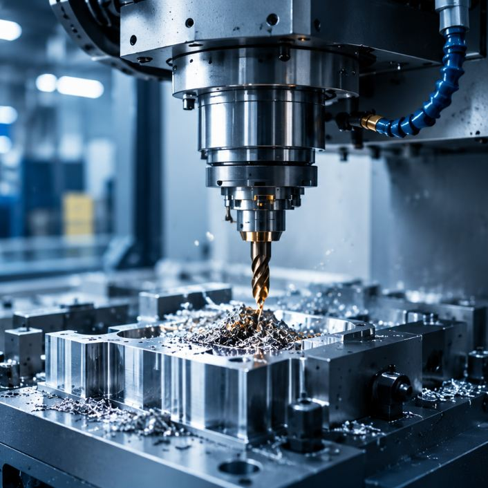
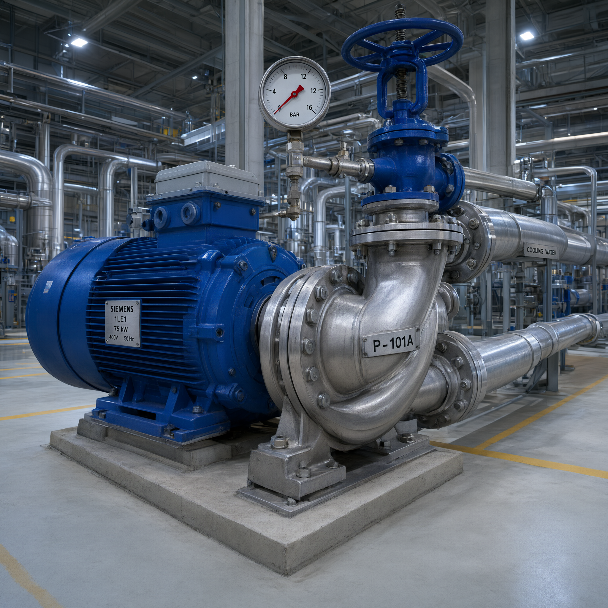

Единая картина
Информация об оборудовании и процессах в удобном формате.
Помогаем предприятиям отслеживать состояние оборудования, анализировать производственные показатели и принимать обоснованные решения.
«ЦифроМониторинг» — подход к контролю оборудования и производственных процессов с использованием цифровых инструментов и аналитики.
Систематизированные данные помогают видеть текущую ситуацию, замечать отклонения и находить возможности для повышения эффективности предприятия.
Изучить возможностиИнформация об оборудовании и процессах в удобном формате.
Наблюдение за показателями и своевременное выявление отклонений.
Использование данных для планирования и анализа результатов.
Объединяем наблюдение за оборудованием, сбор информации и аналитику в едином рабочем процессе.
Отслеживание параметров работы оборудования и производственных процессов.
Помощь в обнаружении изменений показателей, требующих внимания специалистов.
Структурирование данных для оценки динамики и подготовки отчётности.
Данные для планирования обслуживания и более рационального использования ресурсов.
От сбора данных до аналитики и принятия решений — все этапы в единой цифровой системе.
Получение информации с оборудования, датчиков и других источников.
Систематизация и анализ поступающих данных.
Отображение показателей, графиков и результатов мониторинга.
Использование аналитики для повышения эффективности производства.
Цифровой мониторинг помогает выстроить более системный подход к управлению производственными процессами.
Обсудить задачуУдобнее наблюдать за показателями и сопоставлять информацию.
Структурированные данные упрощают поиск нужных показателей.
Аналитика дополняет опыт специалистов объективными наблюдениями.
Решение можно адаптировать под задачи и процессы конкретного предприятия.
Подход к мониторингу подбирается с учётом оборудования, особенностей производства и задач предприятия.

Токарные, фрезерные, сверлильные станки и оборудование с ЧПУ.
Конвейеры, автоматизированные участки и упаковочное оборудование.

Электроприводные агрегаты, насосные и компрессорные установки.
Трансформаторные подстанции и распределительные сети.
Расскажите, какое оборудование или производственный процесс вы хотите контролировать. Вместе определим возможные направления цифровизации.